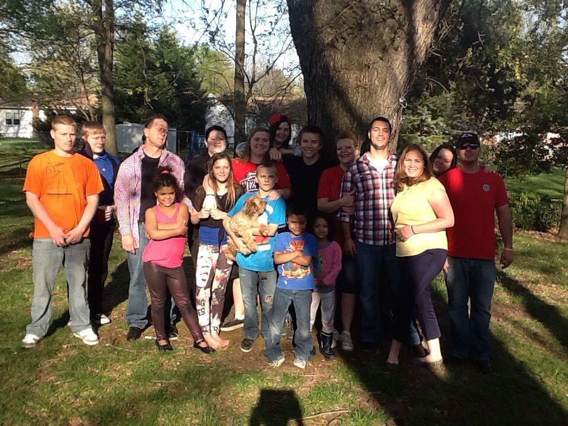
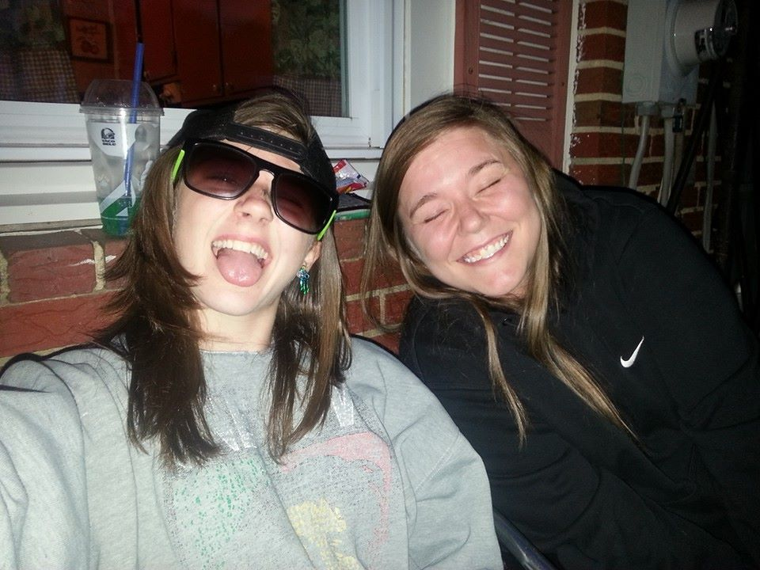
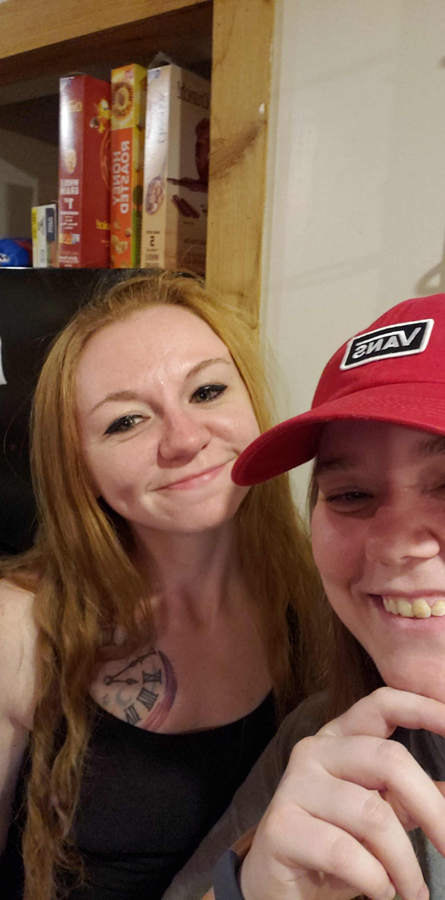
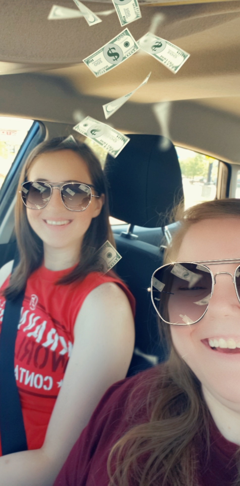

Spending time with my friends and family members has and always will be one of my favorite past times.
Family
I am the middle child of nine, so I have a lot of family to keep up with and I wouldn't have it any other way.
My parents and most of my siblings and I live in very close proximity to each other, so we get see each other fairly often. We like to get together most weekends and have dinner, watch a movie, play games or sports, etc.
My three oldest siblings, however, don't live quite so close. My older sister lives in Odenton, MD with her five kids and boyfriend; I go up to see her once a month or so.
My oldest brother lives in White Marsh, MD with his wife and son. He works long, weird hours as a police officer so I don't get to see him very often. His twin, my other oldest brother, lives in Seattle, WA with his wife. As you might assume, we only see each other a couple times a year.
Friends
My friends are some of the most important people in my life and I try to spend time with them as often as I possibly can.
My three best friends in the world are Alexus, Meghan, and Jessika
Alexus

Alexus and I have known each other since the summer before my senior year of high school, so this summer will be a decade since we became friends.
We became close in a rather short period of time due to similar trauma that we experienced throughout our childhoods. We have maintained that same strong bond to this day, despite only being able to see each other once every couple of months or so.
Meghan

Meghan is easily my oldest friend, as well as one of my closest ones.
Her and my sister were best friends throughout middle school and high school, so we have quite a few fond memories from our adolescence. We have grown much closer the last few years though and have developed a deep bond, similar to the one I share with Alexus.
She is actually moving to Florida this week after living in Maryland our entire lives and I'm going to miss her dearly.
Jessika

Jess and I met about six years ago while we were both working at a McDonald's. I ended up dating her sister, who also worked there at the time, for the next five years. We spent a lot of time together over those years and came to know each other quite well.
It wasn't until after my relationship with her sister ended that Jess and I really got close. In the past year we have built what is probably the healthiest, most open friendship I have ever had and I'm so glad to be able to call her one of my best friends.